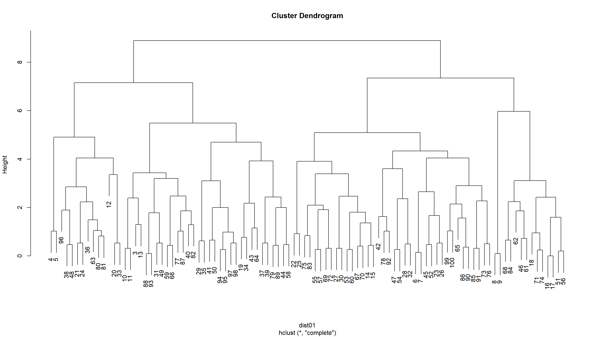

Parte 9 Análisis de cluster - Sesión 05
Cargamos los paquetes necesarios y los datos del archivo hatco.sav
options(scipen=9,width=80)
data <- read_spss("http://download.tesigandia.com/tmim/hatco.sav")No retenemos todo el archivo, sino que hacemos un subfichero con las 7 variables de trabajo y el identificador del registro.
#selecciono las variables con las que voy a trabajar
data01 <- subset(data, select = c(id, x1,x2,x3,x4,x5,x6,x7))Recordemos que si las variables estuvieran medidas en distinta escala, deberíamos estandarizar. No es el caso.
# si fuera necesario debería estandarizar, si todas miden igual no sería necesario
# data01<- scale(data01, center= TRUE, scale=TRUE)mh <- round(mahalanobis(data01[,-1], colMeans(data01[,-1]), cov(data01[,-1])),5)
pmh <- round(pchisq(mh, df=7, lower.tail=FALSE),5)
data01 <- cbind(data01, mh,pmh)
dim(data01)[1] 100 10data01 <- subset(data01, pmh>0.001)
dim(data01)[1] 98 10datatable(data01)data01 <- data01[,c(-9,-10)]9.1 Cálculo de distancias
Calculamos las distancias, euclídeas.
#calculo las distancias (package stats)
dist01 <- dist(data01[,-1])9.2 Clúster jerárquico
9.2.1 Cálculo
Realizamos el cluster jerárquico y listamos sus resultados. Nótese en la agenda de casos, que un número negativo significa referencia al caso original, mientras que un número positivo indica una referencia un grupo creado en el paso idncado por el número
#calculo los grupos method -> the agglomeration method to be used. This should be (an unambiguous abbreviation of) one of "ward.D", "ward.D2", "single", "complete", "average" (= UPGMA), "mcquitty" (= WPGMA), "median" (= WPGMC) or "centroid" (= UPGMC).
clusters <- hclust(dist01, method = "complete")
clusters[["method"]][1] "complete"clusters[["call"]]hclust(d = dist01, method = "complete")clusters[["dist.method"]][1] "euclidean"clusters[["merge"]] [,1] [,2]
[1,] -14 -15
[2,] -6 -7
[3,] -86 -91
[4,] -4 -5
[5,] -49 -54
[6,] -69 -72
[7,] -92 -93
[8,] -45 -52
[9,] -51 -58
[10,] -53 -55
[11,] -67 -70
[12,] -83 -89
[13,] -25 -28
[14,] -8 -9
[15,] -84 -88
[16,] -65 -68
[17,] -12 -13
[18,] -77 -87
[19,] -57 -64
[20,] -43 -50
[21,] -42 -56
[22,] -36 -46
[23,] -26 -30
[24,] -71 -74
[25,] -29 -47
[26,] -18 -31
[27,] -95 -96
[28,] -35 -37
[29,] -19 -22
[30,] -21 -24
[31,] -27 -33
[32,] -39 -48
[33,] -66 -82
[34,] -44 -59
[35,] -17 -32
[36,] -78 -79
[37,] -73 -81
[38,] -20 -23
[39,] -16 6
[40,] 7 27
[41,] -76 -90
[42,] -75 -85
[43,] -2 -3
[44,] -97 -98
[45,] -61 36
[46,] -41 -62
[47,] -38 -80
[48,] -1 -11
[49,] 16 17
[50,] -34 45
[51,] -63 15
[52,] 1 5
[53,] -40 41
[54,] 20 30
[55,] 3 25
[56,] 9 49
[57,] 42 47
[58,] -60 34
[59,] -94 22
[60,] 10 11
[61,] 32 40
[62,] 18 21
[63,] 37 60
[64,] 44 51
[65,] 35 46
[66,] 29 50
[67,] 33 58
[68,] 12 24
[69,] 8 23
[70,] 14 48
[71,] 39 52
[72,] 28 62
[73,] 13 56
[74,] 19 57
[75,] 4 54
[76,] 59 66
[77,] 64 68
[78,] 31 61
[79,] 67 71
[80,] 55 74
[81,] -10 26
[82,] 63 73
[83,] 70 80
[84,] 53 69
[85,] 38 82
[86,] 65 72
[87,] 75 77
[88,] 76 81
[89,] 84 87
[90,] 78 86
[91,] 43 88
[92,] 85 89
[93,] 83 90
[94,] 2 79
[95,] 91 93
[96,] 92 94
[97,] 95 96clusters[["height"]] [1] 0.0000000 0.1000000 0.1000000 0.1414214 0.2000000 0.2449490 0.2645751
[8] 0.2645751 0.2645751 0.2645751 0.3162278 0.3162278 0.3162278 0.3162278
[15] 0.3605551 0.4000000 0.4358899 0.4358899 0.4358899 0.4690416 0.4690416
[22] 0.4690416 0.4924429 0.5000000 0.5291503 0.5291503 0.5291503 0.5291503
[29] 0.5291503 0.5291503 0.6164414 0.6557439 0.6557439 0.7280110 0.7615773
[36] 0.8185353 0.8366600 0.9165151 0.9539392 0.9848858 1.0198039 1.0246951
[43] 1.0246951 1.0344080 1.0488088 1.1489125 1.2884099 1.2961481 1.3601471
[50] 1.4899664 1.5652476 1.5968719 1.6278821 1.6703293 1.7804494 1.8055470
[57] 1.8627936 1.8627936 1.8947295 1.9078784 1.9949937 1.9974984 2.0976177
[64] 2.1447611 2.1725561 2.2338308 2.2383029 2.2737634 2.3643181 2.3916521
[71] 2.4269322 2.4331050 2.4617067 2.4698178 2.6532998 2.8548205 2.9000000
[78] 3.1016125 3.1096624 3.1968735 3.3630343 3.3941125 3.4292856 3.6000000
[85] 3.9076847 3.9230090 4.0435133 4.0472213 4.3335897 4.6957428 4.9061186
[92] 5.0892043 5.4899909 5.9665736 7.1554175 7.3464277 8.8960665clusters[["order"]] [1] 2 3 94 36 46 19 22 34 61 78 79 10 18 31 8 9 1 11 86 91 29 47 57 64 75
[26] 85 38 80 27 33 39 48 92 93 95 96 17 32 41 62 35 37 77 87 42 56 20 23 73 81
[51] 53 55 67 70 25 28 51 58 65 68 12 13 40 76 90 45 52 26 30 4 5 43 50 21 24
[76] 97 98 63 84 88 83 89 71 74 6 7 66 82 60 44 59 16 69 72 14 15 49 54plot(clusters)
9.2.2 Creación de variables de grupo
9.2.2.1 Solución de 5 grupos
Retenemos una variable con la pertenencia a cada grupo (5).
clusterCut.05 <- cutree(clusters, 5)
clusterCut.05 3 4 5 6 7 8 9 10 11 12 13 14 15 16 17 18 19 20 21 22
1 2 2 3 3 4 4 1 1 2 1 3 3 5 5 5 1 2 2 3
23 24 25 26 27 28 29 30 31 32 33 34 35 36 37 38 39 40 41 42
3 2 3 3 3 3 1 3 1 3 2 1 1 2 1 2 1 1 1 3
43 44 45 46 47 48 49 50 51 52 53 54 55 56 57 58 59 60 61 62
1 1 3 5 3 2 1 1 5 3 3 3 3 5 3 1 1 3 5 5
63 64 65 66 67 68 69 70 71 72 73 74 75 76 77 78 79 80 81 82
2 1 3 1 3 5 3 3 5 3 3 5 3 3 1 3 1 2 2 1
83 84 85 86 87 88 89 90 91 92 93 94 95 96 97 98 99 100
3 5 3 3 1 1 1 3 3 3 1 1 1 2 1 1 3 3 9.2.2.2 Solución de 4 grupos
Retenemos una variable con la pertenencia a cada grupo (4).
clusterCut.04 <- cutree(clusters, 4)
clusterCut.04 3 4 5 6 7 8 9 10 11 12 13 14 15 16 17 18 19 20 21 22
1 2 2 3 3 4 4 1 1 2 1 3 3 4 4 4 1 2 2 3
23 24 25 26 27 28 29 30 31 32 33 34 35 36 37 38 39 40 41 42
3 2 3 3 3 3 1 3 1 3 2 1 1 2 1 2 1 1 1 3
43 44 45 46 47 48 49 50 51 52 53 54 55 56 57 58 59 60 61 62
1 1 3 4 3 2 1 1 4 3 3 3 3 4 3 1 1 3 4 4
63 64 65 66 67 68 69 70 71 72 73 74 75 76 77 78 79 80 81 82
2 1 3 1 3 4 3 3 4 3 3 4 3 3 1 3 1 2 2 1
83 84 85 86 87 88 89 90 91 92 93 94 95 96 97 98 99 100
3 4 3 3 1 1 1 3 3 3 1 1 1 2 1 1 3 3 9.2.2.3 Solución de 3 grupos
Retenemos una variable con la pertenencia a cada grupo (3).
clusterCut.03 <- cutree(clusters, 3)
clusterCut.03 3 4 5 6 7 8 9 10 11 12 13 14 15 16 17 18 19 20 21 22
1 1 1 2 2 3 3 1 1 1 1 2 2 3 3 3 1 1 1 2
23 24 25 26 27 28 29 30 31 32 33 34 35 36 37 38 39 40 41 42
2 1 2 2 2 2 1 2 1 2 1 1 1 1 1 1 1 1 1 2
43 44 45 46 47 48 49 50 51 52 53 54 55 56 57 58 59 60 61 62
1 1 2 3 2 1 1 1 3 2 2 2 2 3 2 1 1 2 3 3
63 64 65 66 67 68 69 70 71 72 73 74 75 76 77 78 79 80 81 82
1 1 2 1 2 3 2 2 3 2 2 3 2 2 1 2 1 1 1 1
83 84 85 86 87 88 89 90 91 92 93 94 95 96 97 98 99 100
2 3 2 2 1 1 1 2 2 2 1 1 1 1 1 1 2 2 9.2.2.4 Solución de 2 grupos
Retenemos una variable con la pertenencia a cada grupo (2).
clusterCut.02 <- cutree(clusters, 2)
clusterCut.02 3 4 5 6 7 8 9 10 11 12 13 14 15 16 17 18 19 20 21 22
1 1 1 2 2 2 2 1 1 1 1 2 2 2 2 2 1 1 1 2
23 24 25 26 27 28 29 30 31 32 33 34 35 36 37 38 39 40 41 42
2 1 2 2 2 2 1 2 1 2 1 1 1 1 1 1 1 1 1 2
43 44 45 46 47 48 49 50 51 52 53 54 55 56 57 58 59 60 61 62
1 1 2 2 2 1 1 1 2 2 2 2 2 2 2 1 1 2 2 2
63 64 65 66 67 68 69 70 71 72 73 74 75 76 77 78 79 80 81 82
1 1 2 1 2 2 2 2 2 2 2 2 2 2 1 2 1 1 1 1
83 84 85 86 87 88 89 90 91 92 93 94 95 96 97 98 99 100
2 2 2 2 1 1 1 2 2 2 1 1 1 1 1 1 2 2 Procedemos a unir las variables con el fichero original.
data02 <- cbind(id=data01[,1],clusterCut.02,clusterCut.03,clusterCut.04,clusterCut.05)9.3 Clúster K-medias
9.3.1 Cálculo
Hacemos el análisis K-means para 5, 4 3 y 2 grupos. Listamos secuencialmente sus resúmenes.
#cluster kmeans
set.seed(31121965)
kclusterCut.05 <- kmeans(data01[,-1], 5, nstart = 10)
kclusterCut.05K-means clustering with 5 clusters of sizes 31, 14, 19, 16, 18
Cluster means:
x1 x2 x3 x4 x5 x6 x7
1 4.125806 1.687097 8.638710 4.525806 2.922581 2.091935 5.264516
2 3.614286 4.128571 5.950000 6.064286 3.842857 3.164286 7.950000
3 4.884211 1.510526 9.368421 5.810526 3.178947 3.300000 7.000000
4 2.300000 3.625000 7.843750 5.562500 2.956250 2.675000 7.881250
5 2.011111 2.133333 6.544444 5.266667 2.038889 2.672222 8.483333
Clustering vector:
3 4 5 6 7 8 9 10 11 12 13 14 15 16 17 18 19 20 21 22
5 2 2 1 1 3 3 5 5 2 5 1 1 3 3 3 4 4 2 3
23 24 25 26 27 28 29 30 31 32 33 34 35 36 37 38 39 40 41 42
1 2 3 1 1 1 2 1 5 1 4 4 2 2 5 2 5 5 4 1
43 44 45 46 47 48 49 50 51 52 53 54 55 56 57 58 59 60 61 62
4 5 1 3 1 2 5 4 3 1 1 1 1 3 1 5 5 1 3 3
63 64 65 66 67 68 69 70 71 72 73 74 75 76 77 78 79 80 81 82
2 4 3 5 1 3 1 1 3 1 1 3 1 1 5 1 4 2 2 5
83 84 85 86 87 88 89 90 91 92 93 94 95 96 97 98 99 100
1 3 4 3 5 5 4 3 4 1 5 4 4 2 4 4 1 1
Within cluster sum of squares by cluster:
[1] 130.54274 54.23429 73.35368 51.28063 60.38611
(between_SS / total_SS = 61.6 %)
Available components:
[1] "cluster" "centers" "totss" "withinss" "tot.withinss"
[6] "betweenss" "size" "iter" "ifault" set.seed(31121965)
kclusterCut.04 <- kmeans(data01[,-1], 4, nstart = 10)
kclusterCut.04K-means clustering with 4 clusters of sizes 31, 19, 19, 29
Cluster means:
x1 x2 x3 x4 x5 x6 x7
1 4.125806 1.687097 8.638710 4.525806 2.922581 2.091935 5.264516
2 3.415789 3.989474 6.578947 6.210526 3.684211 3.200000 8.026316
3 4.884211 1.510526 9.368421 5.810526 3.178947 3.300000 7.000000
4 2.024138 2.703448 6.951724 5.196552 2.337931 2.565517 8.193103
Clustering vector:
3 4 5 6 7 8 9 10 11 12 13 14 15 16 17 18 19 20 21 22
4 2 2 1 1 3 3 4 4 2 4 1 1 3 3 3 2 2 2 3
23 24 25 26 27 28 29 30 31 32 33 34 35 36 37 38 39 40 41 42
1 2 3 1 1 1 2 1 4 1 2 4 2 2 4 2 4 4 4 1
43 44 45 46 47 48 49 50 51 52 53 54 55 56 57 58 59 60 61 62
4 4 1 3 1 2 4 4 3 1 1 1 1 3 1 4 4 1 3 3
63 64 65 66 67 68 69 70 71 72 73 74 75 76 77 78 79 80 81 82
2 4 3 4 1 3 1 1 3 1 1 3 1 1 4 1 2 2 2 4
83 84 85 86 87 88 89 90 91 92 93 94 95 96 97 98 99 100
1 3 4 3 4 4 2 3 4 1 4 4 4 2 4 4 1 1
Within cluster sum of squares by cluster:
[1] 130.54274 92.03474 73.35368 116.63724
(between_SS / total_SS = 57.2 %)
Available components:
[1] "cluster" "centers" "totss" "withinss" "tot.withinss"
[6] "betweenss" "size" "iter" "ifault" set.seed(31121965)
kclusterCut.03 <- kmeans(data01[,-1], 3, nstart = 10)
kclusterCut.03K-means clustering with 3 clusters of sizes 31, 19, 48
Cluster means:
x1 x2 x3 x4 x5 x6 x7
1 4.125806 1.687097 8.638710 4.525806 2.922581 2.091935 5.264516
2 4.884211 1.510526 9.368421 5.810526 3.178947 3.300000 7.000000
3 2.575000 3.212500 6.804167 5.597917 2.870833 2.816667 8.127083
Clustering vector:
3 4 5 6 7 8 9 10 11 12 13 14 15 16 17 18 19 20 21 22
3 3 3 1 1 2 2 3 3 3 3 1 1 2 2 2 3 3 3 2
23 24 25 26 27 28 29 30 31 32 33 34 35 36 37 38 39 40 41 42
1 3 2 1 1 1 3 1 3 1 3 3 3 3 3 3 3 3 3 1
43 44 45 46 47 48 49 50 51 52 53 54 55 56 57 58 59 60 61 62
3 3 1 2 1 3 3 3 2 1 1 1 1 2 1 3 3 1 2 2
63 64 65 66 67 68 69 70 71 72 73 74 75 76 77 78 79 80 81 82
3 3 2 3 1 2 1 1 2 1 1 2 1 1 3 1 3 3 3 3
83 84 85 86 87 88 89 90 91 92 93 94 95 96 97 98 99 100
1 2 3 2 3 3 3 2 3 1 3 3 3 3 3 3 1 1
Within cluster sum of squares by cluster:
[1] 130.54274 73.35368 289.03208
(between_SS / total_SS = 48.8 %)
Available components:
[1] "cluster" "centers" "totss" "withinss" "tot.withinss"
[6] "betweenss" "size" "iter" "ifault" set.seed(31121965)
kclusterCut.02 <- kmeans(data01[,-1], 2, nstart = 10)
kclusterCut.02K-means clustering with 2 clusters of sizes 50, 48
Cluster means:
x1 x2 x3 x4 x5 x6 x7
1 4.414 1.6200 8.916000 5.014000 3.020000 2.551000 5.924000
2 2.575 3.2125 6.804167 5.597917 2.870833 2.816667 8.127083
Clustering vector:
3 4 5 6 7 8 9 10 11 12 13 14 15 16 17 18 19 20 21 22
2 2 2 1 1 1 1 2 2 2 2 1 1 1 1 1 2 2 2 1
23 24 25 26 27 28 29 30 31 32 33 34 35 36 37 38 39 40 41 42
1 2 1 1 1 1 2 1 2 1 2 2 2 2 2 2 2 2 2 1
43 44 45 46 47 48 49 50 51 52 53 54 55 56 57 58 59 60 61 62
2 2 1 1 1 2 2 2 1 1 1 1 1 1 1 2 2 1 1 1
63 64 65 66 67 68 69 70 71 72 73 74 75 76 77 78 79 80 81 82
2 2 1 2 1 1 1 1 1 1 1 1 1 1 2 1 2 2 2 2
83 84 85 86 87 88 89 90 91 92 93 94 95 96 97 98 99 100
1 1 2 1 2 2 2 1 2 1 2 2 2 2 2 2 1 1
Within cluster sum of squares by cluster:
[1] 290.2013 289.0321
(between_SS / total_SS = 39.8 %)
Available components:
[1] "cluster" "centers" "totss" "withinss" "tot.withinss"
[6] "betweenss" "size" "iter" "ifault" 9.3.2 Creación de las variables de grupo
g2 <- kclusterCut.02[["cluster"]]
g3 <- kclusterCut.03[["cluster"]]
g4 <- kclusterCut.04[["cluster"]]
g5 <- kclusterCut.05[["cluster"]]Procedemos a unir las variables de pertenencia del K-means con el fichero original.
data03 <- cbind(id=data01[,1], g2, g3, g4, g5)
data <- merge(data, data02, by = "id")
data <- merge(data, data03, by = "id")El fichero resultante tras la adición de las variables es:
datatable(data)9.3.3 Perfil de los grupos, contrastes inferenciales
Perfilamos los grupos con otros datos del banco de datos. Hacemos la prueba Chisq para los datos nominales y la prueba T para los métricos.
data = apply_labels(data, g5 = "Grupo" )
data %>%
tab_cells(x8,x11,x12,x13,x14) %>%
tab_cols(g5) %>%
tab_stat_cases() %>%
tab_last_sig_cases() %>%
tab_pivot()| Grupo | |||||
|---|---|---|---|---|---|
| 1 | 2 | 3 | 4 | 5 | |
| tamaño de la empresa | |||||
| 0 | 29.0 | 4.0 | 19.0 | 6.0 | |
| 1 | 2.0 | 10.0 | 10.0 | 18.0 | |
| #Chi-squared p-value | <0.05 | ||||
| #Total cases | 31.0 | 14.0 | 19.0 | 16.0 | 18.0 |
| especificación de las compras | |||||
| 0 | 2.0 | 10.0 | 10.0 | 18.0 | |
| 1 | 29.0 | 4.0 | 19.0 | 6.0 | |
| #Chi-squared p-value | <0.05 | ||||
| #Total cases | 31.0 | 14.0 | 19.0 | 16.0 | 18.0 |
| estructura | |||||
| 0 | 29.0 | 19.0 | |||
| 1 | 2.0 | 14.0 | 16.0 | 18.0 | |
| #Chi-squared p-value | <0.05 | ||||
| #Total cases | 31.0 | 14.0 | 19.0 | 16.0 | 18.0 |
| tipo de industria | |||||
| 0 | 21.0 | 6.0 | 5.0 | 8.0 | 8.0 |
| 1 | 10.0 | 8.0 | 14.0 | 8.0 | 10.0 |
| #Chi-squared p-value | |||||
| #Total cases | 31.0 | 14.0 | 19.0 | 16.0 | 18.0 |
| situacion de compra | |||||
| 1 | 6.0 | 2.0 | 2.0 | 4.0 | 18.0 |
| 2 | 8.0 | 12.0 | 2.0 | 10.0 | |
| 3 | 17.0 | 15.0 | 2.0 | ||
| #Chi-squared p-value | <0.05 (warn.) | ||||
| #Total cases | 31.0 | 14.0 | 19.0 | 16.0 | 18.0 |
data %>%
tab_cells(x9,x10) %>%
tab_cols(g5) %>%
tab_stat_mean_sd_n() %>%
tab_last_sig_means() %>%
tab_pivot()| Grupo | |||||||||
|---|---|---|---|---|---|---|---|---|---|
| 1 | 2 | 3 | 4 | 5 | |||||
| A | B | C | D | E | |||||
| nivel de uso | |||||||||
| Mean | 46.9 E | 46.5 E | 54.2 A B D E | 46.7 E | 36.3 | ||||
| Std. dev. | 8.8 | 6.5 | 7.0 | 6.1 | 5.3 | ||||
| Unw. valid N | 31.0 | 14.0 | 19.0 | 16.0 | 18.0 | ||||
| nivel de satisfacción | |||||||||
| Mean | 4.9 E | 4.9 E | 5.6 A B D E | 4.6 E | 3.7 | ||||
| Std. dev. | 0.7 | 0.8 | 0.6 | 0.6 | 0.3 | ||||
| Unw. valid N | 31.0 | 14.0 | 19.0 | 16.0 | 18.0 | ||||
data = apply_labels(data, g4 = "Grupo" )
data %>%
tab_cells(x8,x11,x12,x13,x14) %>%
tab_cols(g4) %>%
tab_stat_cases() %>%
tab_last_sig_cases() %>%
tab_pivot()| Grupo | ||||
|---|---|---|---|---|
| 1 | 2 | 3 | 4 | |
| tamaño de la empresa | ||||
| 0 | 29.0 | 8.0 | 19.0 | 2.0 |
| 1 | 2.0 | 11.0 | 27.0 | |
| #Chi-squared p-value | <0.05 | |||
| #Total cases | 31.0 | 19.0 | 19.0 | 29.0 |
| especificación de las compras | ||||
| 0 | 2.0 | 11.0 | 27.0 | |
| 1 | 29.0 | 8.0 | 19.0 | 2.0 |
| #Chi-squared p-value | <0.05 | |||
| #Total cases | 31.0 | 19.0 | 19.0 | 29.0 |
| estructura | ||||
| 0 | 29.0 | 19.0 | ||
| 1 | 2.0 | 19.0 | 29.0 | |
| #Chi-squared p-value | <0.05 | |||
| #Total cases | 31.0 | 19.0 | 19.0 | 29.0 |
| tipo de industria | ||||
| 0 | 21.0 | 8.0 | 5.0 | 14.0 |
| 1 | 10.0 | 11.0 | 14.0 | 15.0 |
| #Chi-squared p-value | <0.05 | |||
| #Total cases | 31.0 | 19.0 | 19.0 | 29.0 |
| situacion de compra | ||||
| 1 | 6.0 | 2.0 | 2.0 | 22.0 |
| 2 | 8.0 | 15.0 | 2.0 | 7.0 |
| 3 | 17.0 | 2.0 | 15.0 | |
| #Chi-squared p-value | <0.05 | |||
| #Total cases | 31.0 | 19.0 | 19.0 | 29.0 |
data %>%
tab_cells(x9,x10) %>%
tab_cols(g4) %>%
tab_stat_mean_sd_n() %>%
tab_last_sig_means() %>%
tab_pivot()| Grupo | |||||||
|---|---|---|---|---|---|---|---|
| 1 | 2 | 3 | 4 | ||||
| A | B | C | D | ||||
| nivel de uso | |||||||
| Mean | 46.9 D | 47.8 D | 54.2 A B D | 39.4 | |||
| Std. dev. | 8.8 | 6.2 | 7.0 | 6.8 | |||
| Unw. valid N | 31.0 | 19.0 | 19.0 | 29.0 | |||
| nivel de satisfacción | |||||||
| Mean | 4.9 D | 4.9 D | 5.6 A B D | 4.0 | |||
| Std. dev. | 0.7 | 0.7 | 0.6 | 0.6 | |||
| Unw. valid N | 31.0 | 19.0 | 19.0 | 29.0 | |||
data = apply_labels(data, g3 = "Grupo" )
data %>%
tab_cells(x8,x11,x12,x13,x14) %>%
tab_cols(g3) %>%
tab_stat_cases() %>%
tab_last_sig_cases() %>%
tab_pivot()| Grupo | |||
|---|---|---|---|
| 1 | 2 | 3 | |
| tamaño de la empresa | |||
| 0 | 29.0 | 19.0 | 10.0 |
| 1 | 2.0 | 38.0 | |
| #Chi-squared p-value | <0.05 | ||
| #Total cases | 31.0 | 19.0 | 48.0 |
| especificación de las compras | |||
| 0 | 2.0 | 38.0 | |
| 1 | 29.0 | 19.0 | 10.0 |
| #Chi-squared p-value | <0.05 | ||
| #Total cases | 31.0 | 19.0 | 48.0 |
| estructura | |||
| 0 | 29.0 | 19.0 | |
| 1 | 2.0 | 48.0 | |
| #Chi-squared p-value | <0.05 | ||
| #Total cases | 31.0 | 19.0 | 48.0 |
| tipo de industria | |||
| 0 | 21.0 | 5.0 | 22.0 |
| 1 | 10.0 | 14.0 | 26.0 |
| #Chi-squared p-value | <0.05 | ||
| #Total cases | 31.0 | 19.0 | 48.0 |
| situacion de compra | |||
| 1 | 6.0 | 2.0 | 24.0 |
| 2 | 8.0 | 2.0 | 22.0 |
| 3 | 17.0 | 15.0 | 2.0 |
| #Chi-squared p-value | <0.05 | ||
| #Total cases | 31.0 | 19.0 | 48.0 |
data %>%
tab_cells(x9,x10) %>%
tab_cols(g3) %>%
tab_stat_mean_sd_n() %>%
tab_last_sig_means() %>%
tab_pivot()| Grupo | |||||
|---|---|---|---|---|---|
| 1 | 2 | 3 | |||
| A | B | C | |||
| nivel de uso | |||||
| Mean | 46.9 C | 54.2 A C | 42.7 | ||
| Std. dev. | 8.8 | 7.0 | 7.7 | ||
| Unw. valid N | 31.0 | 19.0 | 48.0 | ||
| nivel de satisfacción | |||||
| Mean | 4.9 C | 5.6 A C | 4.4 | ||
| Std. dev. | 0.7 | 0.6 | 0.8 | ||
| Unw. valid N | 31.0 | 19.0 | 48.0 | ||
data = apply_labels(data, g2 = "Grupo" )
data %>%
tab_cells(x8,x11,x12,x13,x14) %>%
tab_cols(g2) %>%
tab_stat_cases() %>%
tab_last_sig_cases() %>%
tab_pivot()| Grupo | ||
|---|---|---|
| 1 | 2 | |
| tamaño de la empresa | ||
| 0 | 48.0 | 10.0 |
| 1 | 2.0 | 38.0 |
| #Chi-squared p-value | <0.05 | |
| #Total cases | 50.0 | 48.0 |
| especificación de las compras | ||
| 0 | 2.0 | 38.0 |
| 1 | 48.0 | 10.0 |
| #Chi-squared p-value | <0.05 | |
| #Total cases | 50.0 | 48.0 |
| estructura | ||
| 0 | 48.0 | |
| 1 | 2.0 | 48.0 |
| #Chi-squared p-value | <0.05 | |
| #Total cases | 50.0 | 48.0 |
| tipo de industria | ||
| 0 | 26.0 | 22.0 |
| 1 | 24.0 | 26.0 |
| #Chi-squared p-value | ||
| #Total cases | 50.0 | 48.0 |
| situacion de compra | ||
| 1 | 8.0 | 24.0 |
| 2 | 10.0 | 22.0 |
| 3 | 32.0 | 2.0 |
| #Chi-squared p-value | <0.05 | |
| #Total cases | 50.0 | 48.0 |
data %>%
tab_cells(x9,x10) %>%
tab_cols(g2) %>%
tab_stat_mean_sd_n() %>%
tab_last_sig_means() %>%
tab_pivot()| Grupo | |||
|---|---|---|---|
| 1 | 2 | ||
| A | B | ||
| nivel de uso | |||
| Mean | 49.7 B | 42.7 | |
| Std. dev. | 8.9 | 7.7 | |
| Unw. valid N | 50.0 | 48.0 | |
| nivel de satisfacción | |||
| Mean | 5.2 B | 4.4 | |
| Std. dev. | 0.7 | 0.8 | |
| Unw. valid N | 50.0 | 48.0 | |